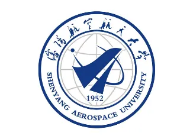

|
本科生,中共党员 |
我现在是一名二战的学生, 就读于电子科技大学 计算机学院，同时修读互联网金融专业，将于2022年6月获得工学和经济学双学士学位。
|  |
本科 沈阳航空航天大学 (2018.9 ~ 2022.6)
|
医院灾害脆弱性分析系统
本科毕业设计
该项目旨在搭建数据采集平台，并为医院的灾害脆弱性量身定制统计和分析平台，方便医院管理者更好的监控医院潜在风险。
最小网元设计
电子科技大学计算机网络课程设计
该项目旨在参考OSI模型以及TCP/IP模型，基于Socket编程设计并实现一个具有一定网络层次结构的最小网元，并搭建简单拓扑结构的网络完成单元间的通信。